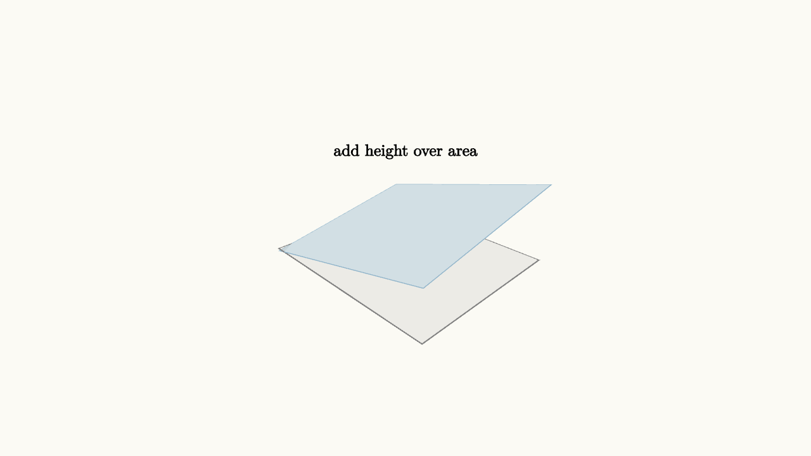

Double Integrals Stack Tiny Columns
A single integral adds many thin rectangles. A double integral adds many thin columns. The base is a region in the $xy$-plane, and the height over each base point is $f(x,y)$.
When $f(x,y)\ge 0$,
is the volume under the surface $z=f(x,y)$ and above the region $R$.

source
background = [0.985, 0.98, 0.955, 1]
camera = Camera([3.0, -3.0, 2.4], [0, 0, 0.35], [0, 0, 1])
let f = |x, y| 0.45 + 0.25 * x + 0.18 * y
mesh diagram = block {
. fill{alpha{0.18} BLUE} stroke{alpha{0.42} BLUE, 0.8} ExplicitFunc2d(|x, y| f(x, y), [-1.2, 1.2, 16], [-1.0, 1.0, 16])
. fill{alpha{0.12} GRAY} stroke{GRAY, 1.2} Rect([2.4, 2.0])
. center{[0, 0, 1.25]} orient_to_camera{camera} color{BLACK} Text("add height over area", 0.62)
}The symbol $dA$ means a tiny piece of area. In rectangular coordinates, that tiny area often becomes $dx\,dy$ or $dy\,dx$. The order tells how the region is swept.
If the region is a rectangle $[a,b]\times[c,d]$, then
Read the inside integral first. For a fixed $y$, sweep across $x$ and add a strip of volume. Then the outside integral adds those strips as $y$ changes.
source
background = [0.985, 0.98, 0.955, 1]
camera = Camera([3.0, -3.0, 2.4], [0, 0, 0.35], [0, 0, 1])
let f = |x, y| 0.45 + 0.25 * x + 0.18 * y
"surface"
mesh surface = fill{alpha{0.15} BLUE} stroke{alpha{0.35} BLUE, 0.7} ExplicitFunc2d(|x, y| f(x, y), [-1.2, 1.2, 16], [-1.0, 1.0, 16])
mesh strip = []
mesh label = center{[0, 0, 1.35]} orient_to_camera{camera} color{BLACK} Text("slice the base", 0.62)
play Grow(0.8)
play Fade(0.4)
"strip"
strip = fill{alpha{0.24} ORANGE} stroke{ORANGE, 1.2} ExplicitFunc2d(|x, y| f(x, y), [-1.2, 1.2, 8], [-0.15, 0.15, 2])
label = center{[0, 0, 1.35]} orient_to_camera{camera} color{BLACK} Text("one strip of volume", 0.62)
play [Grow(0.7, [&strip]), Trans(0.8, [&label])]
"view"
camera = Camera([2.2, 2.7, 2.1], [0, 0, 0.35], [0, 0, 1])
play CameraLerp(&camera, 1.2)For nonrectangular regions, the bounds carry the geometry. If
then
The inner bounds say that once $x$ is chosen, $y$ runs from the bottom edge to the slanted edge. Drawing the region before writing the integral is the best way to avoid swapping limits or integrating over the wrong shape.
If $f$ takes negative values, the double integral becomes signed volume. Material above the plane contributes positively. Material below contributes negatively. For actual physical volume, integrate a nonnegative height or split the region where the sign changes.
Double integrals are bookkeeping for geometry: base area times local height, added over a region. The hard part is often not the integration technique. It is seeing the region clearly enough to describe the tiny columns you want to add.